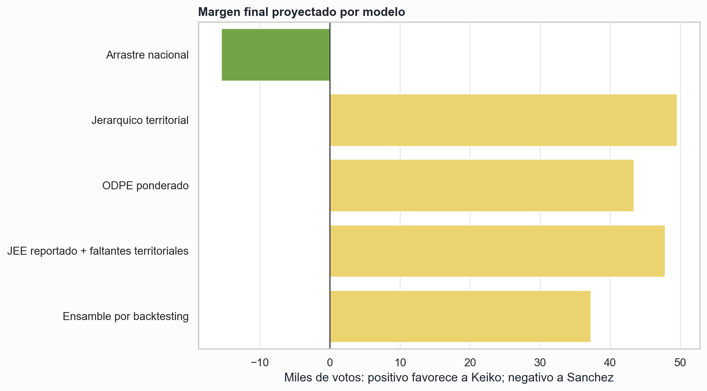
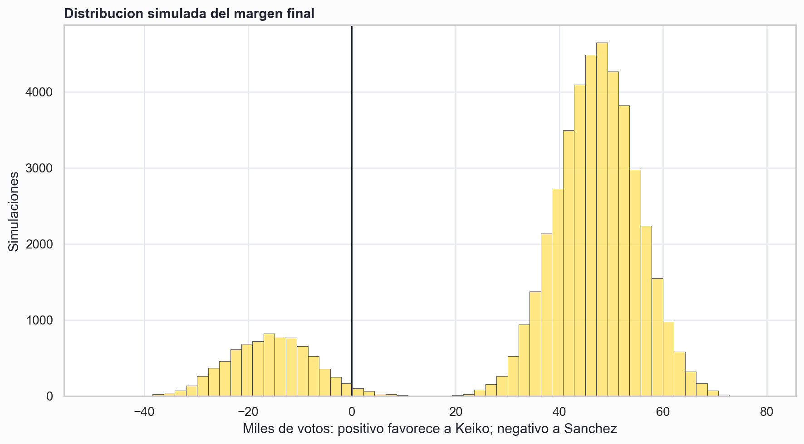
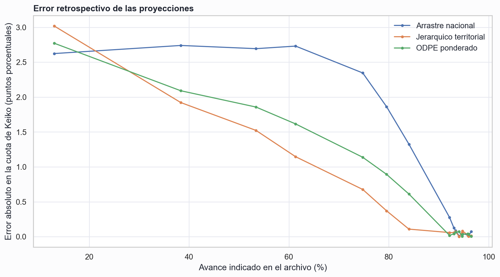
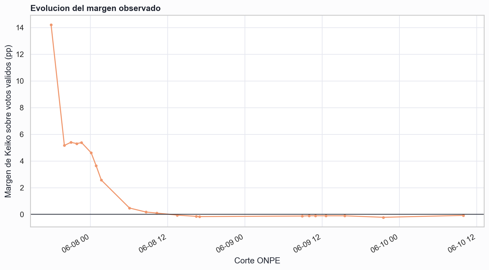

Proyeccion electoral ONPE 2026
Corte: 10/06/2026 09:58 | Archivo: PR-ESP_Presidencial_2026-06-10_09-58-AM_97.541.csv
Resumen tecnico
Sanchez lidera actualmente el resultado oficial contabilizado por 15 099 votos. Por separado, el ensamble estadistico proyecta como ganador final a Keiko Fujimori, con un margen central de 37 249 votos. La probabilidad condicional de Keiko, mezclando los modelos segun su backtesting, es 84.5%.
La eleccion sigue dentro de un margen muy estrecho
En las actas oficialmente contabilizadas, Sanchez lidera: Keiko tiene 49.958% y Sanchez 50.042%. Para revertir ese resultado, Keiko necesita aproximadamente 51.74% de los votos validos pendientes; los votos ya digitados en las actas JEE le asignan una proporcion suficiente para terminar 47 873 votos adelante si fueran admitidos sin cambios.

La dispersion entre modelos representa diferencias en como se trata la composicion territorial de las actas pendientes. El intervalo mixto de 95% va de -23 977 a 61 871 votos para el margen de Keiko. El ensamble pondera cada proyeccion segun su error en cortes anteriores.

Alcance, datos y definiciones
Se usa la mesa como unidad. Voto valido equivale a Fuerza Popular mas Juntos por el Peru. El universo proviene de la maestra de mesas y el estado/voto de cada corte proviene de los CSV ONPE. En el ultimo corte hay 17 996 285 votos validos contabilizados y 785 069 electores habiles asociados a actas no contabilizadas.
Modelos y validacion retrospectiva
| Modelo | Keiko | Sanchez | Margen votos Keiko |
|---|---|---|---|
| Resultado observado | 49.958% | 50.042% | -15 099 |
| Arrastre nacional | 49.958% | 50.042% | -15 546 |
| Jerarquico territorial | 50.135% | 49.865% | 49 576 |
| ODPE ponderado | 50.118% | 49.882% | 43 414 |
| JEE reportado + faltantes territoriales | 50.130% | 49.870% | 47 873 |
| Ensamble por backtesting | 50.101% | 49.899% | 37 249 |
Arrastre nacional: mantiene participacion y reparto nacional observado. Jerarquico territorial: estima cada mesa pendiente mediante distrito, provincia, departamento y ambito, con contraccion hacia niveles superiores. ODPE ponderado: usa el patron observado dentro de cada ODPE. JEE reportado + faltantes territoriales: usa los votos digitados de las actas enviadas al JEE y proyecta territorialmente las mesas aun no presentes en el extracto. Ensamble: pesos por error retrospectivo desde 60% de avance: Arrastre nacional: 16.0%, Jerarquico territorial: 53.2%, ODPE ponderado: 30.8%.

Error absoluto medio reciente: Jerarquico territorial: 0.169 pp, ODPE ponderado: 0.293 pp, Arrastre nacional: 0.562 pp.

Limitaciones e incertidumbre
- El backtesting usa como objetivo el ultimo resultado contabilizado disponible, no un resultado final certificado.
- Las actas enviadas al JEE tienen un mecanismo de seleccion distinto al ingreso ordinario de actas.
- La probabilidad de victoria es condicional a los modelos y no incorpora decisiones juridicas extraordinarias.
- La cobertura ODPE es 99.84%; 147 mesas no tienen cruce ODPE, aunque conservan su geografia ONPE.
Siguiente actualizacion
Al agregar un nuevo CSV a insumos/descargas_modulo, ejecutar
python3 modelos/oraculo_onpe.py. El pipeline vuelve a seleccionar el corte mas reciente,
recalibra el backtesting y reemplaza este informe.
Pregunta que puede cambiar la conclusion
La principal incertidumbre es si las actas que salen del JEE conservan el patron electoral de mesas comparables o presentan un sesgo sistematico por tipo de observacion y territorio.